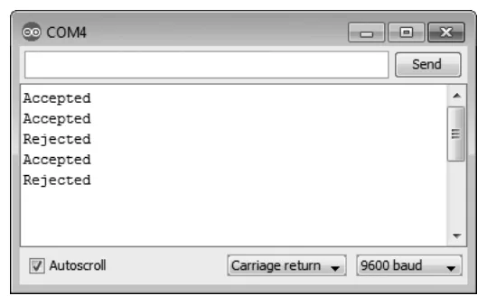

Now let’s put the RFID system to use. In this project you’ll learn how to trigger an Arduino event when the correct RFID tag is read. This sketch stores two RFID tag numbers; when one of the cards is read by the reader, it will display Accepted in the Serial Monitor. If the wrong card is presented, then the Serial Monitor will display Rejected. We’ll use this as a base to add RFID controls to existing projects.
The Sketch
Enter and upload the following sketch. However, at ❶ and ❷, replace the xs in each array with the numbers for each of the RFID tags you generated earlier in the chapter. (We discussed arrays in Chapter 6.)
// Project 52 – Creating a Simple RFID Control System
int data1 = 0;
int ok = -1;
// use Listing 16-1 to find your tag numbers
❶ int tag1[14] = { x , x , x , x , x , x , x , x , x , x , x , x , x , x };
❷ int tag2[14] = { x , x , x , x , x , x , x , x , x , x , x , x , x , x };
int newtag[14] = {0,0,0,0,0,0,0,0,0,0,0,0,0,0}; // used for read comparisons
void setup()
{
Serial.flush(); // need to flush serial buffer,
// otherwise first read may not be correct
Serial.begin(9600);
}
❸ boolean comparetag(int aa[14], int bb[14])
{
boolean ff = false;
int fg = 0;
for (int cc = 0 ; cc < 14 ; cc++)
{
if (aa[cc] == bb[cc])
{
fg++;
}
}
if (fg == 14)
{
ff = true;
}
return ff;
}
❹ void checkmytags() // compares each tag against the tag just read
{
ok = 0; // this variable helps decision-making,
// if it is 1 we have a match, zero is a read but no match,
// -1 is no read attempt made
if (comparetag(newtag, tag1) == true)
{
❺ ok++;
}
if (comparetag(newtag, tag2) == true)
{
❻ ok++;
}
}
void loop()
{
ok = -1;
if (Serial.available() > 0) // if a read has been attempted
{
// read the incoming number on serial RX
delay(100); // needed to allow time for the data
// to come in from the serial buffer.
for (int z = 0 ; z < 14 ; z++) // read the rest of the tag
❼ {
data1 = Serial.read();
newtag[z] = data1;
}
Serial.flush(); // stops multiple reads
// now to match tags up
❽ checkmytags();
}
❾ //now do something based on tag type
if (ok > 0) // if we had a match
{
Serial.println("Accepted");
ok = -1;
}
else if (ok == 0) // if we didn't have a match
{
Serial.println("Rejected");
ok = -1;
}
}How It Works
When a tag is presented to the RFID reader, it sends the tag numbers through the serial port. We capture all 14 of these numbers and place them in the array newtag[] at ❼. Next, the tag is compared against the two stored tag numbers at ❶ and ❷ using the function checkmytags() at ❹ and ❽, with the actual comparisons of the tag arrays passed to the function comparetag() at ❸.
The comparetag() function accepts the two number arrays as parameters and returns (in Boolean) whether the arrays are identical (true) or different (false). If a match is made, the variable OK is set to 1 at ❺ and ❻. Finally, at ❾, we have the actions to take once the tag read succeeds.
After uploading the sketch and reconnecting the wire from Arduino D0 to the RFID reader RX (see Figure 16-3), open the Serial Monitor window and present some tags to the reader. The results should be similar to Figure 16-5.
